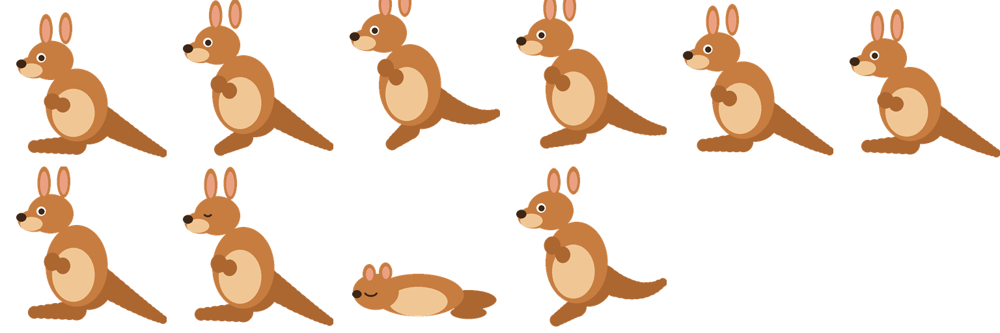

一个不会写代码的妈妈，一头扎进了 AI。
热爱学习、热爱捣鼓 —— 把这份热爱，用在陪两个娃身上，也用在做点好玩的东西上。
比起卖现成资料，我更想把这一路趟过的坑、攒下的经验，一点点分享给你。
第一次跑通完整链路：
真实场景 → 独家资源 → AI 工具加持 → 真实可用的产出
下载了学校 MathsOnline Year 8–12 全套原始课件，在 Obsidian + Claude Code 协作下，制作出可直接打印的中英双语辅导笔记。
中国家长看不懂澳洲课纲和教材逻辑。我有原始资料 + 英语能力 + AI 工具，孩子就是真实试用客户。
Medicare、驾照、税号、电费网络办理…… 沉淀成"新移民第一年手册"。
不做泛泛的"AI 赋能个人成长"，只做具体场景：「我如何用 Claude Code 给孩子做澳洲数学笔记」。
以 Year 6 · 数与运算基础（Unit 1）为例。
从澳洲学校官方系统下载的英文 lesson summary 课件。中国家长看着头大。
中文引入 · 概念讲解 · 中英对照词汇 · 例题解析 · 独立练习 · 折叠答案。
10 课 · 一个单元用开源模板渲染，配上我自己的中英对照内容。孩子愿意翻完，家长直接打印。
看 Lesson 03 成品 →你看到的 1 个 HTML，是 10 课草稿 + 2 个自研 Skills + 1 套开源模板 串起来的。
工具是别人的，内容和体系是我的。这条产线可以批量复制到 Year 7、Year 8、Year 9 ……
澳洲 K-12 课件 + 互动小游戏，AI 串起一条产线。
同样是「质数与合数」，我做了 4 种呈现 —— 读的、打印的、讲的、玩的。你更喜欢哪一种？
判断锐角 / 直角 / 钝角 / 优角，气泡里画出真实张开的角。答错讲解 + 错题本，难度三档可调。同一套引擎做出来的第二个游戏。
每一个上来的作品都是我亲手做、亲身验证过的。
AI 生成的图片、卡片、视频。让内容好看到值得点开。
STACK · guizang-ppt-skill · Claude Code
视频工作流 · 待发布
陪读之余，用 AI 做些不那么正经、但让人开心的小东西。

一只深夜用 Claude Code 做出来的桌面袋鼠，陪娃写作业时就蹦跶在屏幕角落。它不解决什么大问题，纯粹是想让「坐下来学习」这件事，多一点点陪伴和温度。
STACK · Tauri 桌面应用 · Claude Code · 桌面 App（下载版整理中）
为整理澳洲学校课件而生。一个英语 + 外贸出身的妈妈，亲手写的 AI 工作流 —— 从最初的单个指令文档，长成了带模板、参考资料和脚本的完整工具。
把孩子从学校带回来的课件照片（HEIC/JPG）自动整理成中英双语笔记 + 打印版。现在内置 5 种课件形态自动识别 + 打印模板 + 水印脚本。
根据 MathsOnline Lesson Summary PDF 自动生成中英双语数学辅导笔记。内置渲染模板 + 单元目录 / 课程包 / 自动转 PDF，已覆盖 Year 6–9。
把课件里的一个知识点，做成手机能玩的 HTML 互动小游戏：练习 + 答错讲解 + 自动错题本 + 难度三档。内置一套配置驱动的游戏引擎，换个知识点就能出新游戏。上面"质数合数"和"角的类型"那两个游戏，就是它做的。
如果你正在准备移民澳洲，或者已经在悉尼/墨尔本陪娃读书，
欢迎来加我，互相取暖、互通有无。